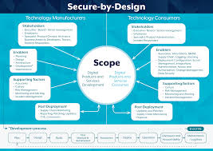

Security by Design refers to a proactive approach to designing and implementing cloud-based systems and applications with security as a fundamental and integral part of the design process. This approach emphasizes the incorporation of security measures and best practices from the very beginning of the cloud solution’s development, rather than treating security as an afterthought.
Preventive Approach:
Proactively identifying and addressing security issues during the design phase helps prevent security vulnerabilities and threats from the outset.
Data Protection:
Strong security measures protect sensitive data and build trust with customers and users.
Resilience:
Security by Design promotes system resilience, making cloud-based systems more robust and capable of withstanding attacks or failures.
Efficiency:
Automated security processes and measures make security management more efficient and less error-prone.
Scalability:
A secure cloud design can easily scale to accommodate growth without compromising security.
Sustainability:
Implementing security by design ensures that security is a sustainable practice rather than an occasional concern.
Conduct a Security Requirements Analysis:
Identify the specific security needs and threats relevant to your project. Consider industry-specific standards and compliance requirements.
Apply Secure Design Principles:
Apply secure design principles, such as the principle of least privilege, defence in depth, and separation of concerns, when architecting your cloud-based solution.
Evaluate & Prioritize Security Risks:
Evaluate and prioritize security risks based on the likelihood and potential impact of each threat.
Implement Encryption:
Apply encryption to data at rest and data in transit. Implement strong data protection measures to safeguard sensitive information.
Establish Logging and Monitoring:
Establish comprehensive logging and monitoring capabilities to detect and respond to security events and anomalies.
Evaluate Third-Party Components:
Evaluate the security of third-party components and services you integrate into your cloud environment.
Implement Automated Security Scanning Tools:
Implement automated security scanning tools that regularly check for vulnerabilities and misconfigurations in your cloud environment and application. Ensure they meet your security standards.